(Day 1) Data Extraction and Management#
Author: Zach del Rosario
Learning outcomes#
By working through this exercise, you will be able to:
Prevent future data headaches by carefully planning your data recording scheme
Extract data from tables in published documents with Tabula
Liberate data from graphs with WebPlotDigitizer
Show code cell content
import numpy as np
import pandas as pd
import grama as gr
DF = gr.Intention()
Planning Data Recording#
Perhaps the best way to ensure high-quality data is to carefully decide how to record your data before you start collecting it.
Example 1: Poor data planning#
Run |
Observation |
|---|---|
1 |
It worked |
2 |
It failed |
3 |
It worked |
Q1: Suppose you were reviewing data in this form; would you be able to answer the following questions? Why or why not?#
How many observations were collected?
What were the experimental settings for each observation?
Were all of the planned experiments run?
What would you do to resolve the issue with Observation 2?
Example 2: More details#
Run |
Knob A |
Knob B |
Recorded Value |
Notes |
|---|---|---|---|---|
1 |
1.0 m/s |
2.3 kg |
1.6 eV |
|
2 |
1.0 mph |
10.0 g |
NA |
Sample did not survive characterization |
3 |
0.5 mph |
50.0 g |
1e-17 J |
Q2: Suppose you were reviewing data in this form; would you be able to answer the following questions? Why or why not?#
What were the experimental settings for each observation?
How do the experimental settings compare for each observation?
Were all of the planned experiments run?
What would you do to resolve the issue with Observation 2?
Example 3: Even Better#
Run |
Knob A (m/s) |
Knob B (g) |
Recorded Value (eV) |
Date |
Notes |
|---|---|---|---|---|---|
1 / 2 |
1.00 |
2.3e3 |
1.60 |
2021-08-11 |
- |
2 / 2 |
0.45 |
2.0e1 |
NA |
2021-08-11 |
Sample did not survive characterization |
1 / 1 |
0.22 |
5.0e1 |
62.42 |
2021-08-12 |
- |
Q3: Suppose you were reviewing data in this form; would you be able to answer the following questions? Why or why not?#
How do the experimental settings compare for each observation?
Were all of the planned experiments run?
Further reading#
Broman and Woo have further suggestions on data organization.
Tabula: Extracting tables from documents#
Background: Tabula is a piece of software developed for journalists carrying out investigative reporting. It was developed with support from organizations like ProPublica and The New York Times. This tool is meant to help investigators parse unwieldy PDFs and liberate useful information.
Q4 Download and install Tabula; the webpage has installation instructions.#
Note: Tabula’s interface is through a locally-hosted server; it should automatically open a browser window for Tabula. If it does not, then open http://localhost:8080/ after you’ve launched Tabula.
Q5 Download this example PDF and import it into Tabula for data extraction.#
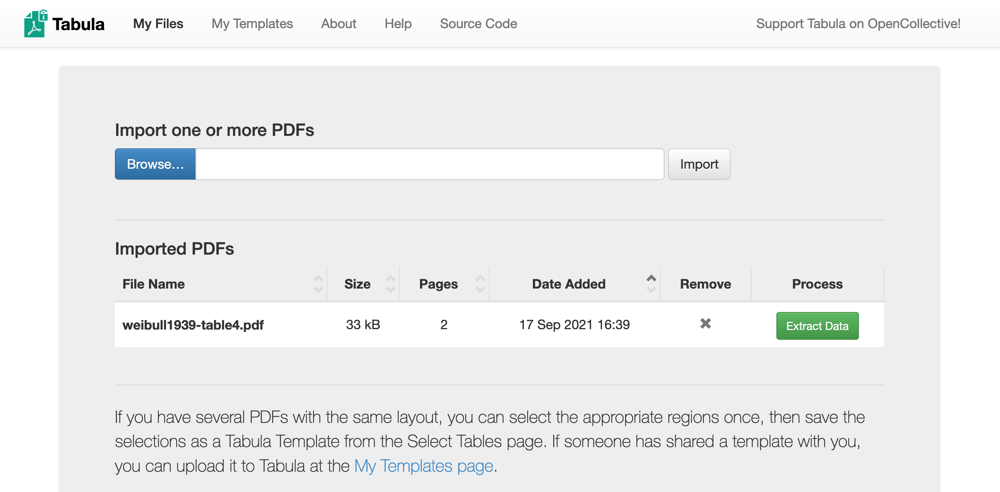
Click Browse to find the example PDF, click Import to load the file into Tabula, then click Extract Data to enter the data extraction interface.
Q7 Once selected, click Preview & Export Extracted Data.#
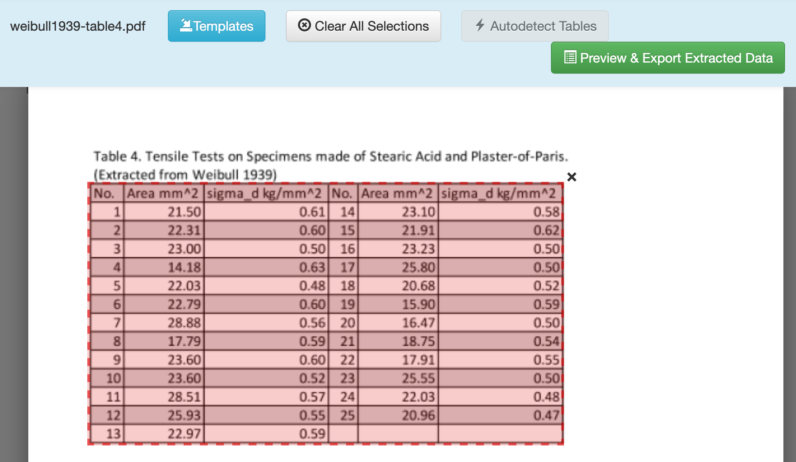
Q8 Choose between Stream and Lattice options to help Tabula extract the data correctly.#
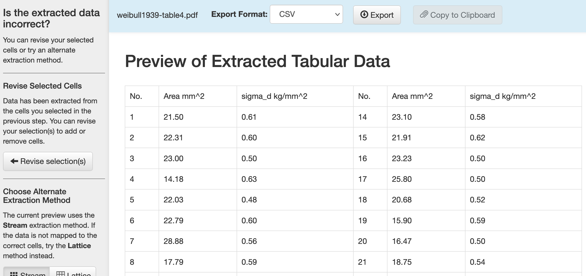
The Stream option looks for whitespace, while the Lattice option looks for vertical and horizontal bars that denote data entries. For this case, both options work fine.
Q9 Once satisfied, click Export to download the data.#
Once you finish this, you should have access to a CSV that looks like the following:
No. |
Area mm^2 |
sigma_d kg/mm^2 |
No. |
Area mm^2 |
sigma_d kg/mm^2 |
|---|---|---|---|---|---|
1 |
21.50 |
0.61 |
14 |
23.10 |
0.58 |
2 |
22.31 |
0.60 |
15 |
21.91 |
0.62 |
3 |
23.00 |
0.50 |
16 |
23.23 |
0.50 |
4 |
14.18 |
0.63 |
17 |
25.80 |
0.50 |
5 |
22.03 |
0.48 |
18 |
20.68 |
0.52 |
6 |
22.79 |
0.60 |
19 |
15.90 |
0.59 |
7 |
28.88 |
0.56 |
20 |
16.47 |
0.50 |
8 |
17.79 |
0.59 |
21 |
18.75 |
0.54 |
9 |
23.60 |
0.60 |
22 |
17.91 |
0.55 |
10 |
23.60 |
0.52 |
23 |
25.55 |
0.50 |
11 |
28.51 |
0.57 |
24 |
22.03 |
0.48 |
12 |
25.93 |
0.55 |
25 |
20.96 |
0.47 |
13 |
22.97 |
0.59 |
These data are not quite ready for informatics tools (they’re not tidy), but at least we didn’t have to type all these digits by hand! We’ll see in a future part of the workshop how to reshape this dataset into a more usable format.
Important caveat! Image-based PDF’s.#
Tabula tends to work best with more modern, fully-digital documents. For PDF’s of older documents, you might get the following:
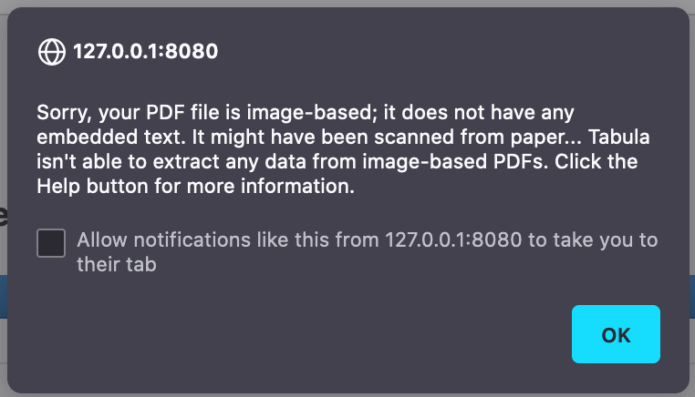
This means the PDF doesn’t have any digitized text in it; it’s just a scan of an old document. The Help tab in Tabula gives some suggestions on things you can try; for instance, the help page links to optical character recognition (OCR) machine learning tools you can use to pre-process an image into text data, which you can then treat with Tabula.
WebPlotDigitizer: Liberating data from images#
Sometimes data are messy—we’ll learn how to deal with that later in the workshop. Other times data are “locked up” in a format we can’t easily analyze, such as in an image. In this exercise you’ll learn how to liberate data from a plot using WebPlotDigitizer.
Note: I originally extracted these data from an Economist article on American meat prices and production in 2020.
Q10 Go to the WebPlotDigitizer website and download the desktop version (matching your operating system). Launch the program.#
Note: On Mac OS X you may have to open Security & Privacy in order to launch WebPlotDigitizer on your machine.
Q11 Extract the data from the following image:#
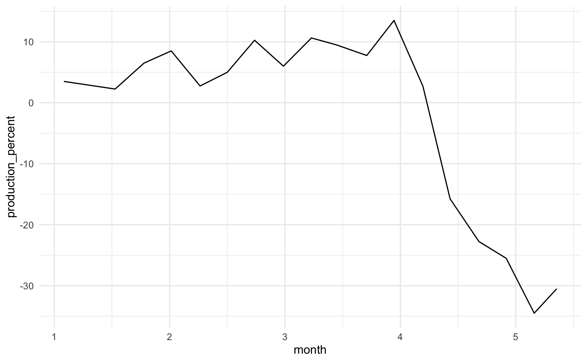
You can click this link to download the image. This image shows the percent change in US beef production as reported in this Economist article. We’ll go through extraction step-by-step:
{kind=link}
Click the Load Image(s) button, and select the beef production image you downloaded.
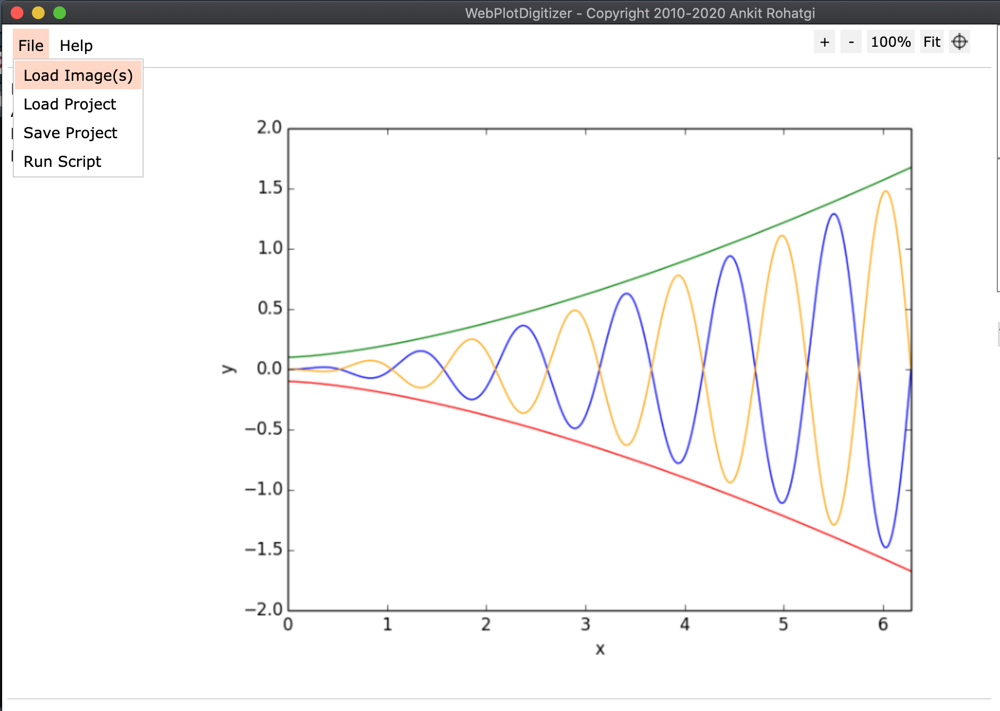
Choose the 2D (X-Y) Plot type.
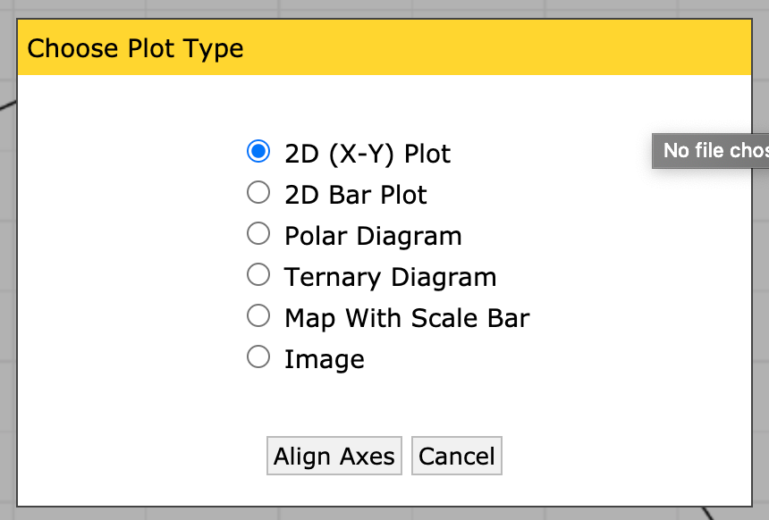
Make sure to read these instructions!
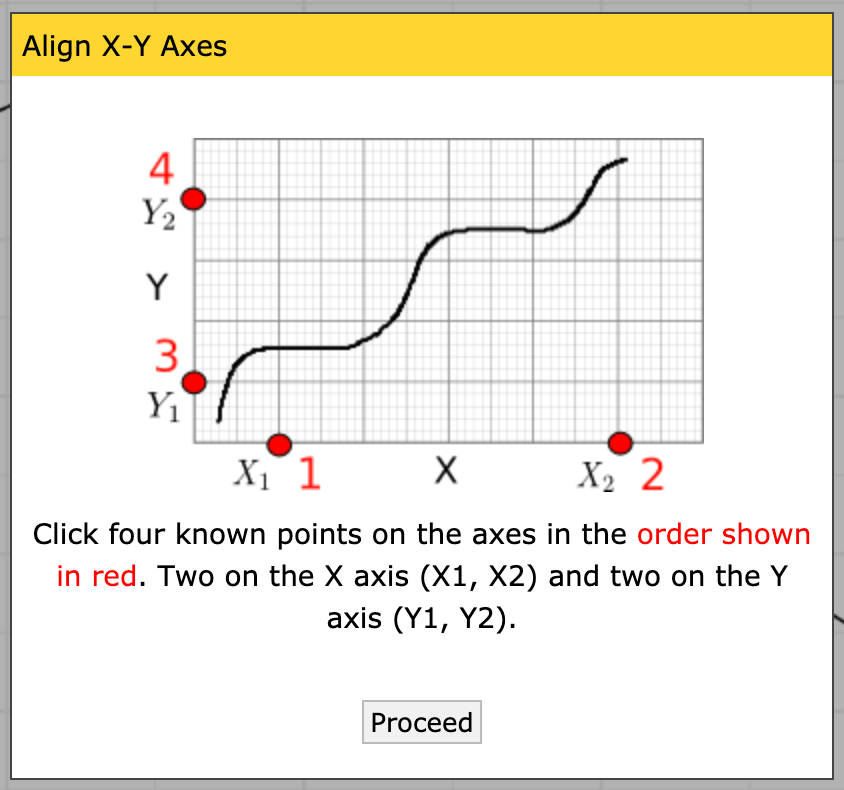
Place the four control points; it doesn’t matter what precise values you pick, just that you know the X values for the first two, and the Y values for the second two.
Note: Once you’ve placed a single point, you can use the arrow keys on your keyboard to make micro adjustments to the point; this means you don’t have to be super-accurate with your mouse. Use this to your advantage!
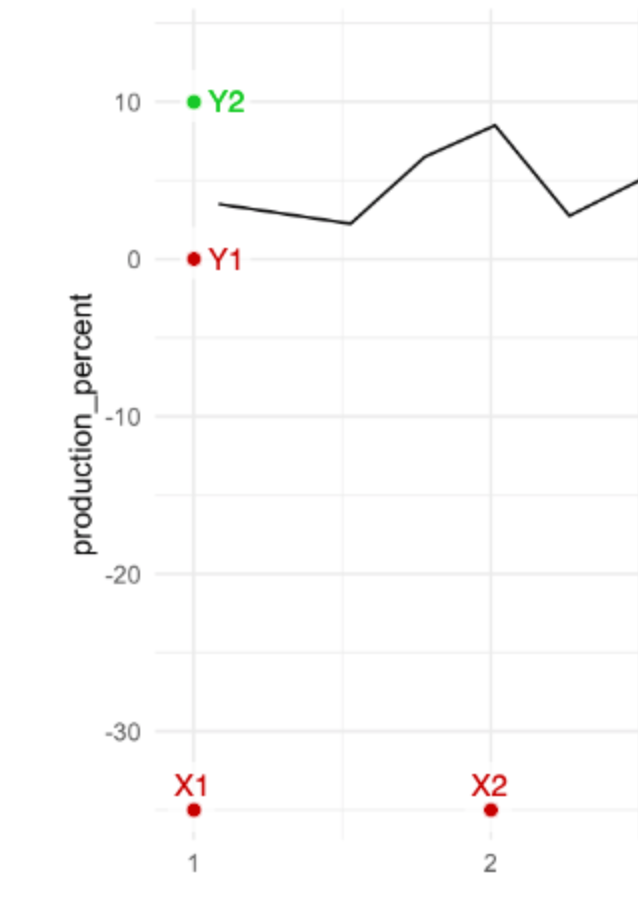
Calibrate the axes by entering the X and Y values you placed. Note that you can give decimals, dates, times, or exponents.
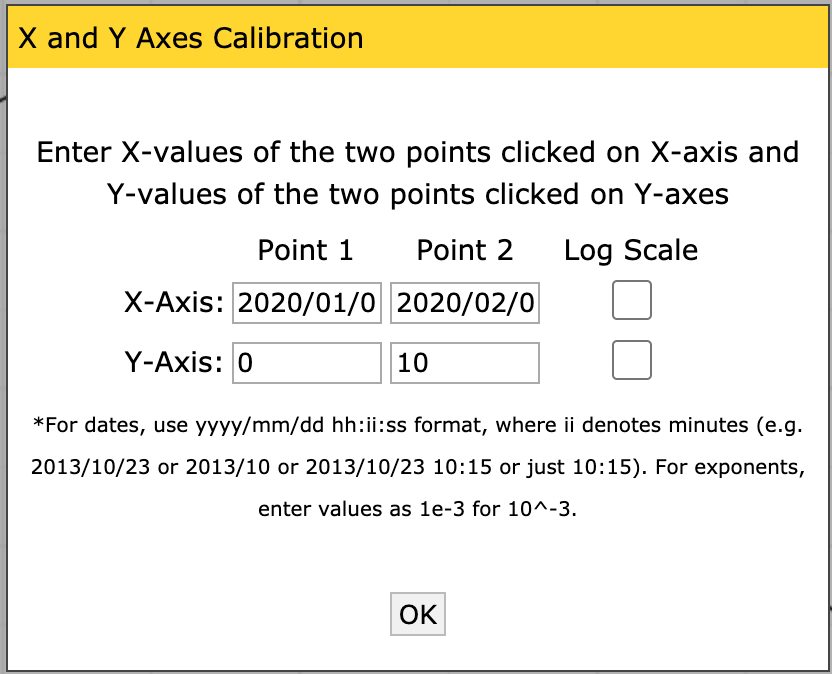
Now that you have a set of axes, you can extract the data. This plot is fairly high-contrast, so we can use the Automatic Extraction tools. Click on the Box setting, and select the foreground color to match the color of the data curve (in this case, black).
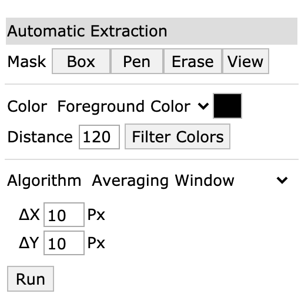
Once you’ve selected the box tool, draw a rectangle over an area containing the data. Note that if you cover the labels, the algorithm will try to extract those too!
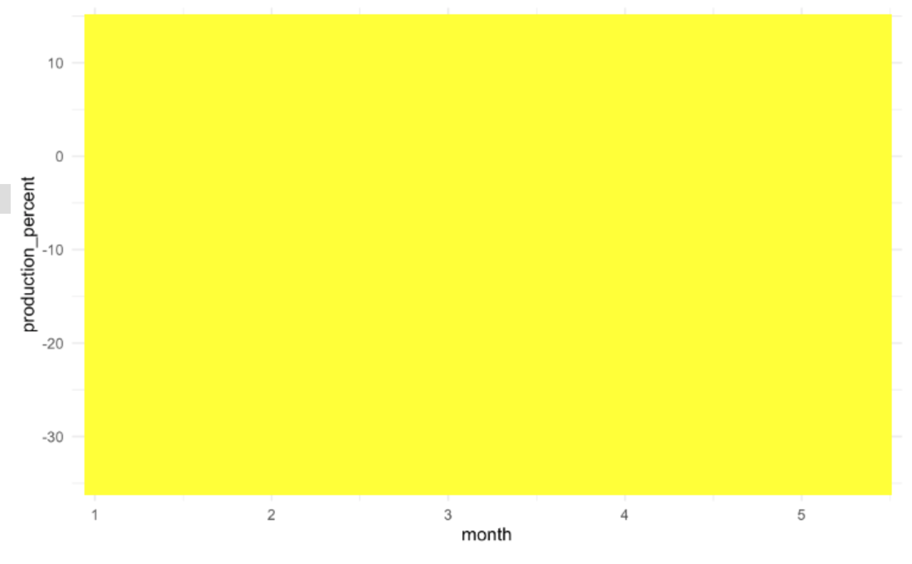
Click the Run button; you should see red dots covering the data curve.
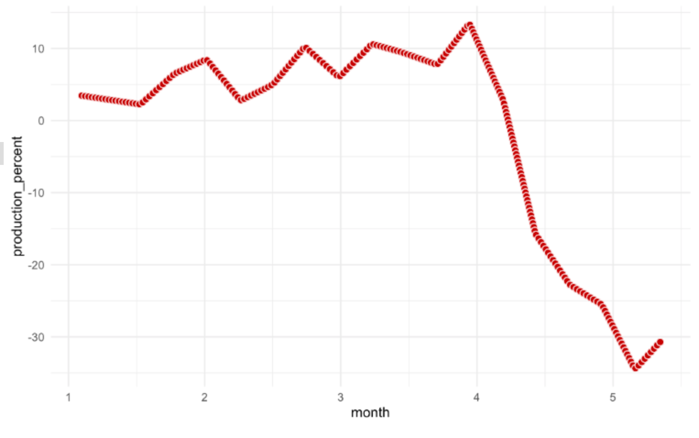
Now you can save the data to a file; make sure the dataset is selected (highlighted in orange) and click the
View Databutton.
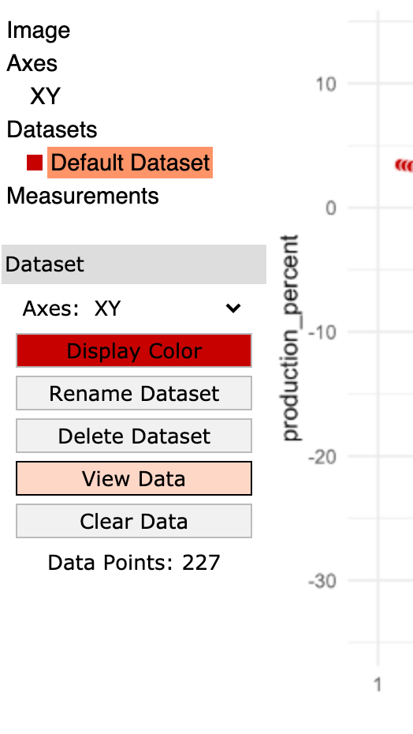
Click the Download .CSV button and give the file a sensible name.
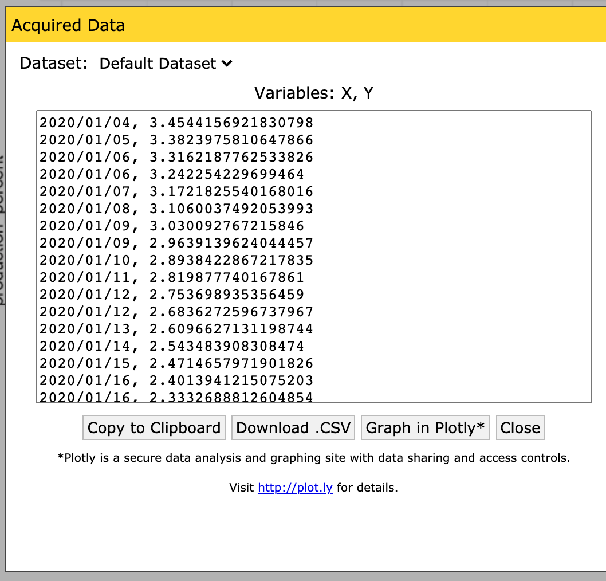
Congrats! You just liberated data from a plot! This was a somewhat whimsical example, but you can use WebPlotDigitizer to liberate data from any plot: A screencap from proprietary software, an image in a journal article that doesn’t report the raw data, and so on. I recommend you watch the WebPlotDigitizer tutorial video ~ 19 minutes. (I recommend you give this a watch if you want some inspiration on other use cases: There are a lot of very clever ways to use this tool!)
Survey#
Once you complete this activity, please fill out the following 30-second survey: